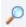
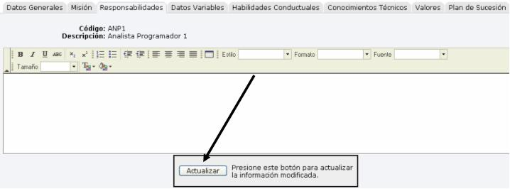
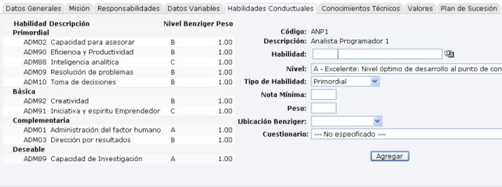
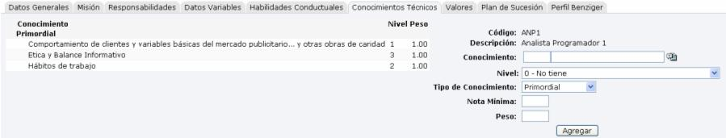
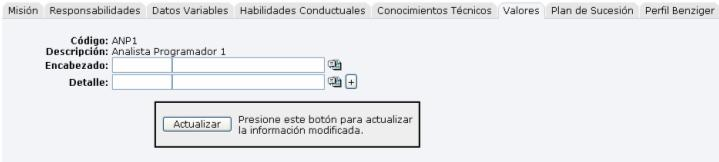
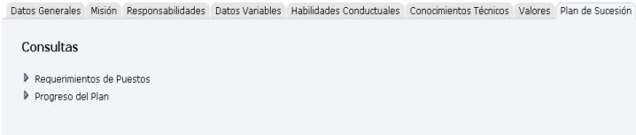
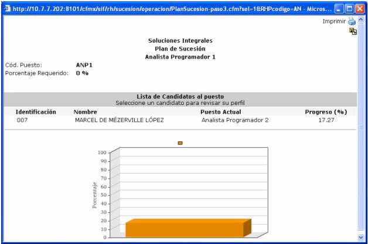
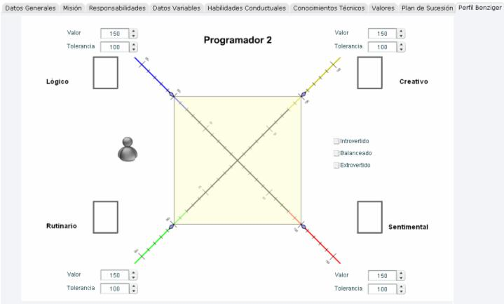

Las empresas pueden crear publicaciones con las descripciones del puesto que soliciten. Para ello se debe de llenar cierta información, la cual se ha dividido en 9 categorías:
Datos Generales
Misión
Responsabilidades
Datos Variables
Habilidades Conceptuales
Conocimientos Técnicos
Valores
Plan de Sucesión
Perfil Benziger
1.1 Datos Generales.
En esta sección de debe de indicar el empleado que aprueba el documento junto con la fecha de aprobación.
Centro Funcional: centro funcional donde va a pertenecer el nuevo puesto.
Código: identifica el puesto en el sistema.
Descripción: nombre del puesto que se esta creando.
Ocupación: es el código equivalente del puesto que se esta creando en el sistema, con el código que tiene la Caja del Seguro.
Puesto Externo: es el código equivalente del puesto que se esta creando en el sistema, con el código que tiene el I.N.S.
Tipo: seleccionar el tipo del puesto entre Mando Bajo, Mando Intermedio, Mando Alto, o Normal, entre otros.
Programa de Capacitación: se debe de seleccionar el programa de capacitación que aplica para dicho puesto. El icono

despliega los cursos que tiene el programa seleccionado.
Puesto Presupuestario: es el puesto equivalente al puesto de RH que se esta creando. Dichos puestos se crean en el módulo de Planilla Presupuestaria
 Visualiza en pantalla, el
formato del reporte del puesto con toda la información que se ingreso.
Visualiza en pantalla, el
formato del reporte del puesto con toda la información que se ingreso.
1.2 Misión.
En esta sección se debe de digitar la descripción de la misión de la persona que opte por este puesto.
Luego se debe presionar el botón “Actualizar” para guardar los cambios y actualizar la información.

1.3 Responsabilidades.
En esta sección se deben de digitar las responsabilidades por proceso, que debe tener la persona que esté en ese puesto.
Luego se debe presionar el botón “Actualizar” para guardar los cambios y actualizar la información.

1.4 Datos Variables.
Aquí se definen las especificaciones del puesto. Algunas de ellas pueden ser Solución de Problemas, Dirección y Supervisión, Autoridad, etc

Se debe de escoger el dato variable y el valor, así como también definir el orden en que se desea que aparezcan las especificaciones.
1.5 Habilidades Conductuales.
Aquí se define la lista de habilidades que la persona debe de tener para optar por el puesto.
Por cada habilidad, se escoge un nivel (A, B, C), un tipo (primordial, básica, complementaria, deseable). Si se requiere, también se puede definir una nota mínima y un peso. Además de seleccionar la ubicación Benziger y el cuestionario que aplica para cada habilidad:

1.6 Conocimientos Técnicos.
Aquí se define la lista de conocimientos, que la persona debe de tener para optar por el puesto.
Por cada conocimiento, se escoge un nivel (0, 1, 2, 3), un tipo (primordial, básica, complementaria, deseable). Si se requiere, también se puede definir una nota mínima y un peso.

1.7 Valores.
Aquí se definirá el perfil del puesto. Se puede subdividir en Educación, Experiencia (en el área y/o en el grado), Idioma, Licencias, etc.

Ejemplo:
Carrera Informática.
Educación (Grado) Licenciatura.
Experiencia (Área) Análisis de Proyectos.
Experiencia (Grado) Media (entre 3 y 5 años)
Idioma Español, Inglés.
1.8 Plan de Sucesión.
Si el puesto tiene Plan de Sucesión, en esta sección se puede observar dos consultas del plan:

Requerimientos del Puesto:
En esta consulta se podrá observar los diferentes requisitos del puesto, divididos en habilidades conductuales y conocimientos técnicos requeridos por el puesto.

Progreso del Plan:
Esta consulta muestra el avance que tienen los empleados que están en ese puesto:

1.9 Perfil Benziger
En esta opción se muestra un gráfico con el perfil Benziger del puesto:
